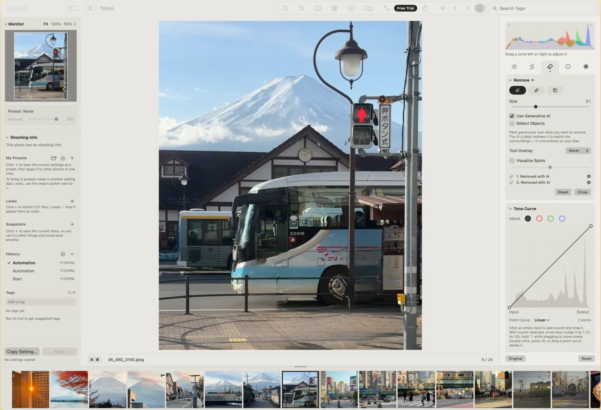

Nessuna importazione. Solo le tue cartelle.
Apri una cartella da una scheda SD o da un SSD esterno e le foto sono subito lì. Nessun catalogo né database: le modifiche sono salvate in file XMP accanto alle foto e gli originali restano intatti.
Apri una cartella e inizia subito: guarda, seleziona e sviluppa senza importare. Le tue foto non lasciano mai il Mac o il PC Windows, e tutta l’IA funziona sul dispositivo.
Download gratuito, con 30 giorni di prova gratuita di tutte le funzioni. Richiede macOS 26 o successivo. Windows 10 (64 bit) o successivo.
Se Windows mostra «Windows ha protetto il PC», fai clic su «Ulteriori informazioni» → «Esegui comunque».

RAW calibrati sulla tua fotocamera — Profili calibrati per oltre 130 fotocamere. Esposizione, curva tonale, color grading — e abbastanza veloce per migliaia di scatti.
Apri una cartella da una scheda SD o da un SSD esterno e le foto sono subito lì. Nessun catalogo né database: le modifiche sono salvate in file XMP accanto alle foto e gli originali restano intatti.

Leviga la pelle e uniforma il tono senza perdere la texture. Modella volto, mascella, occhi, naso e labbra con i cursori, e rimuovi le imperfezioni di una persona da molte foto in una volta.

Seleziona soggetto, cielo, sfondo o persone con un clic e regola ogni maschera separatamente. Aggiungi, sottrai e interseca per rifinire.

Dipingi ciò che vuoi togliere e l’area viene riempita in armonia con il contesto. Tutta l’IA funziona sul dispositivo: le tue foto non lasciano mai il Mac o il PC Windows.

Attiva la connessione IA e Claude o ChatGPT (Codex) usa Butter Edit al posto tuo: scegliere la foto migliore di ogni raffica, ritoccare una foto in base a una descrizione, riprendere i toni di una foto di riferimento, aggiungere maschere, ritagliare ed esportare, basta chiederlo.
Funzione della versione acquistata direttamente (Mac e Windows). Serve un tuo account Claude o ChatGPT. È disattivata all’inizio; quando è attiva, piccole immagini di anteprima esaminate dall’IA vengono inviate al servizio di IA collegato.
“Dai 3 stelle alla foto migliore di ogni raffica in questa cartella”
“Dai a questa foto un look da pellicola caldo”
“Abbina il tono della foto di riferimento sulla mia scrivania”
Nessun comando elimina le foto. Le regolazioni si possono annullare (⌘Z su Mac, Ctrl+Z su Windows).
Butter Edit è un editor di foto senza importazione e senza catalogo. Apri una cartella da una scheda SD o da un SSD esterno e le foto compaiono subito: guarda, seleziona, sviluppa i RAW e modifica. È pensato per scorrere migliaia di scatti in fretta.
Nessun abbonamento. Lo compri una volta, è tuo.
Guardare, selezionare e modificare è sempre gratis.
Fai clic su «Inizia la prova gratuita di 30 giorni» per usare tutte le funzioni per 30 giorni. Non ti viene mai addebitato nulla in automatico.
Dopo la prova si blocca solo l’esportazione. Un acquisto la sblocca per sempre.
Acquistalo fuori dall’App Store e usalo su Mac e Windows, fino a 3 computer.
Scrivici per qualsiasi domanda o problema: thefilmtravel@gmail.com
Indica il tuo computer (modello di Mac e versione di macOS, oppure versione di Windows), il modello della fotocamera e cosa è successo.
L’app si scarica gratis. Fai clic su «Inizia la prova gratuita di 30 giorni» per usare tutte le funzioni per 30 giorni. Dopo la prova, visualizzazione, selezione e modifica continuano a funzionare; per esportare serve l’acquisto unico di sblocco. Non ti viene mai addebitato nulla in automatico.
Su un Mac con lo stesso Account Apple, apri Impostazioni → Acquisto e fai clic su «Ripristina acquisti».
Le foto originali non vengono mai modificate. Le modifiche sono salvate in file .xmp accanto alle foto.
Su Mac, Butter Edit apre i file RAW delle fotocamere supportate da macOS; su Windows, quelli delle fotocamere supportate dal decoder RAW integrato (LibRaw). Le fotocamere nuove spesso funzionano dopo un aggiornamento di macOS o dell’app.
Controlla dall’app una fotocamera collegata via USB e ricevi le nuove foto direttamente nella tua cartella. Consenti l’accesso alla fotocamera al primo collegamento.